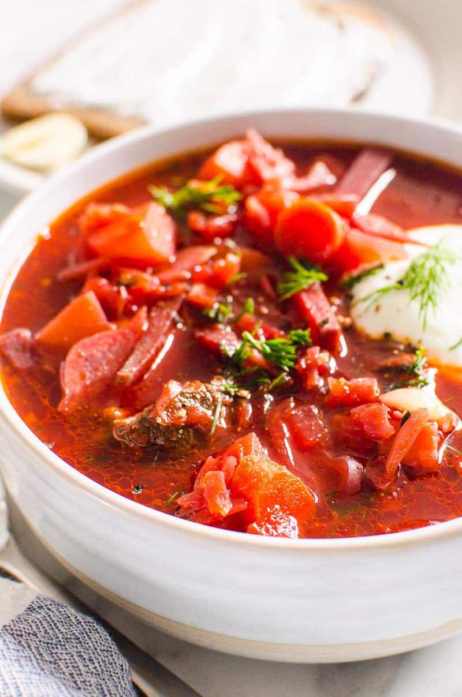

Rating: ★ ★ ★ ★ ★
Update rating:
Favorite dish: Ukrainian Borscht
Review: If you don't know what borscht is, it is a deep red-coloured soup with cabbage, beets, potatoes, carrots, onion, garlic, and possibly beef and beans - served with sour cream and dill. Fantastic taste! Essentially, this beet borscht is a superfood and a meal in itself.